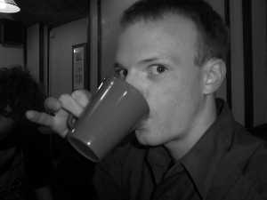

Default font for a default profile
This/Is/Me :

Name: Nicholas P. Shepherd
Online Alias: Shepherdnick
Age: 18
Location: Wales, UK
Family: Two Sisters, Mum and Dad
A little about me: I was born and raised in Wales, the country just west of England. There I spent most of my life in "The Highway" infant school, and "Greenlawn Junior School". During year 6 of my school life I moved to Bude in Cornwall, or more specifically, Marhamchurch in Cornwall. I then attended Marhamchurch Primary School. After completeing a year at this school, we (as a family) moved back to Wales, and there I joined West Monmouth Comprehensive School. I spent a good 5 years of my life there and really started to become me. I studied my GCSE's and gained a qualification in: English Lit, English Lang, Mathematics, Biology, Chemistry and Physics, French, ICT, Geography and Welsh. Later that year I joined St. Albans RC High School (STARCH) to continue my education studying A-Levels. I have achieved an AS level in Geography and Physics and await the final exams in ICT, Biology and Chemistry.
Likes/Dislikes: I love computer games, PS2, XBox, GameCube, PC, GBA, and retro. I also love web design and surfing around stylish web sites (particularly HTML web sites). I also love watching films in the cinema, and collecting DVD's. I listen to most music, although I have a preference in rock and metal music. I like traditional British comedies like Blackadder and Monty Python, but also love the new style of comedies (such as parts played by Jim Carrey). I also love to run. I go running every other day to keep myself fit, and to relieve myself from the stresses of every day life.
I dislike mostly raw onions, spiders, vomiting, and embarrassing myself when I get incredibly drunk, which happens far too often.
Future Plans: I plan on going to Swansea University in September 2004 to study Computer Science. Hopefully there I will meet someone to have a long-term relationship with! When I leave, I don't really have a plan yet, but whatever it is, will involve, lots of money and computers! ;)
Favourite Quote: "My path is strewn with the cow pats of the devils own satanic herd" - Blackadder II
Personal Web Site: http://www.shepherdnick.co.uk - check it out for all the latest news, views and photos about me!
E-mail Address: http://www.shepherdnick.co.uk/contact.html - I never give my real email address out for obvious reasons!